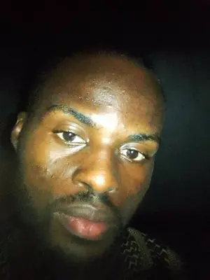

About Me
Hi, I'm Oluwaseyi Elujoba, a front-end engineer with one year of experience. I specialize in creating clean, responsive, and accessible web interfaces using HTML, CSS, JavaScript, and modern frameworks. I'm passionate about delivering smooth user experiences and optimizing performance. I thrive under pressure and bring strong problem-solving, attention to detail, and communication skills. I'm always looking for new projects where I can contribute and continue learning as I grow as a developer.
Lagos, Nigeria
Lagos is a state in southwest Nigeria. It's bordered by the state of Ogun to the north and east, the Bight of Benin to the south, and the Republic of Benin to the west. Lagos is Nigeria's second most populated state, but it's the smallest in terms of land mass.